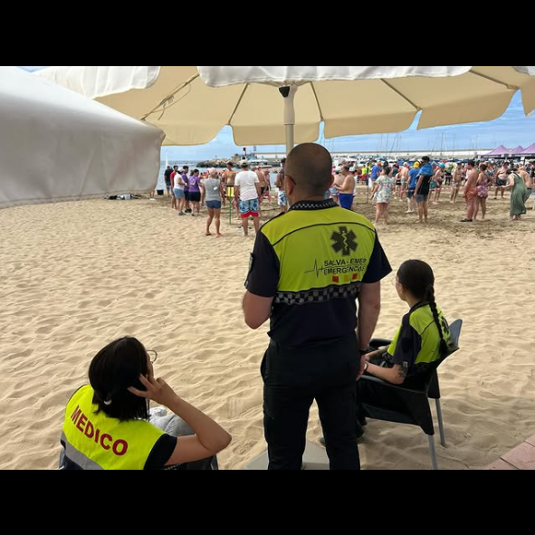

Equipo altamente capacitado para dar soporte tanto en el manejo de situaciones críticas como en la atención diaria.
Contamos con un servicio de ambulancias de urgencias y traslados médicos, equipadas con tecnología avanzada y personal sanitario altamente cualificado, preparado para atender cualquier emergencia médica de forma rápida y eficiente.
Servicio médico personalizado a domicilio, dando soporte en la atención de urgencias y de necesidades médicas no urgentes, asegurando una atención rápida y eficaz para personas dependientes.
Servicio de asistencia telemática especializado en garantizar la protección y asistencia de personas mayores o vulnerables. El reloj Acuda ofrece monitoreo de constantes vitales, recordatorios de medicación, informes mensuales, asistencia en emergencias, geolocalización y monitoreo de perímetro.
Disponibilidad de unidades médicas en eventos masivos para responder ante cualquier eventualidad.

Contamos con un equipo altamente capacitado y tecnología avanzada para realizar rescates y salvamentos en las condiciones más extremas, garantizando seguridad y eficacia en cada operación.
Brindamos acompañamiento y orientación a las personas afectadas por emergencias, gestionando las necesidades psicosociales de las víctimas y sus familias.
Especializados en rescates en diversas situaciones de emergencia, minimizando riesgos y maximizando la seguridad de todas las personas involucradas.
Contamos con un equipo altamente capacitado y equipado para realizar rescates en terrenos de difícil acceso, como montañas, barrancos y zonas agrestes, garantizando la seguridad de las personas incluso en condiciones extremas.
Nuestro equipo está preparado para intervenir en situaciones de gran magnitud, como desastres naturales o accidentes de gran escala, brindando rescate, atención médica y apoyo integral en las primeras horas críticas tras la emergencia.
Compuesta por perros de rescate especializados en la búsqueda y localización de personas en situaciones de emergencia en el agua.

Desarrollamos planes de seguridad a medida para grandes eventos, asegurando que todos los riesgos sean gestionados de forma efectiva y garantizando la seguridad de los asistentes y organizadores.
Elaboración de planes de seguridad, logística e implementación conforme al Decreto 86/2013.
Equipo especializado en emergencias con licencias para toma de imágenes y videos con drones que permite la monitorización de incidencias y prevención en zonas de riesgo.
Apoyo en la gestión de tráfico en situaciones de emergencia y eventos especiales. Somos un equipo de profesionales capacitados para que funcione bien el tráfico, es decir, para que no hayan accidentes automovilísticos ni atascos. Estamos preparados para enfrentar cualquier siniestro y realizar rescates inclusive en las situaciones más complejas. Gracias a nuestra formación y nuestra tecnología nos permiten actuar con rapidez y eficacia, priorizar la seguridad y bienestar de las personas.

Unidad de formadores especializada en capacitaciones relacionadas con emergencias, rescates y salvamento para adquirir competencias para actuar en situaciones críticas de forma eficiente y segura.
- Cursos ad-hoc: Creamos cursos y talleres para empresas, centros educativos y público general en primeros auxilios, RCP y planes de evacuación según sus necesidades.
- Simulacros e Innovación: Entrenamientos prácticos con tecnología avanzada, como simuladores de rescate y realidad virtual.
- Certificaciones: Programas avalados por organismos reconocidos para validar competencias.


 ES
ES
 EN
EN
 DE
DE
 FR
FR
 NO
NO
 IS
IS